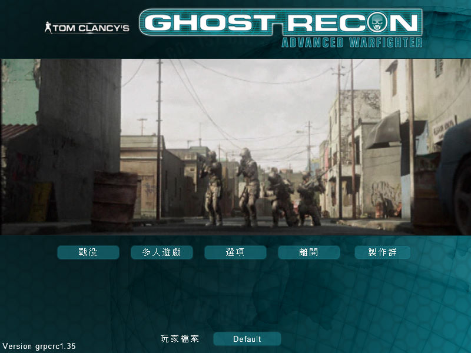
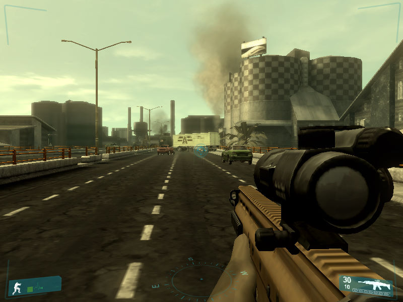

名稱：火線獵殺：先進戰士 (Tom Clancy's Ghost Recon: Advanced Warfighter，中文版) 簡介：Ubisoft 2006年出品的即時戰術第一人稱射擊遊戲 [待補]。

保護：光碟SecuROM 7.27+序號（RLDX-FDRQ-TRF7-W7HG） 備註：VirtualBox無法正常執行，虛擬機請使用VMware，不過效能可能不太夠，建議在Win64 實機執行。 備註：遊戲需要安裝PhyX（本版為2.3.3） 檔案：nocd.rar = 免光碟檔